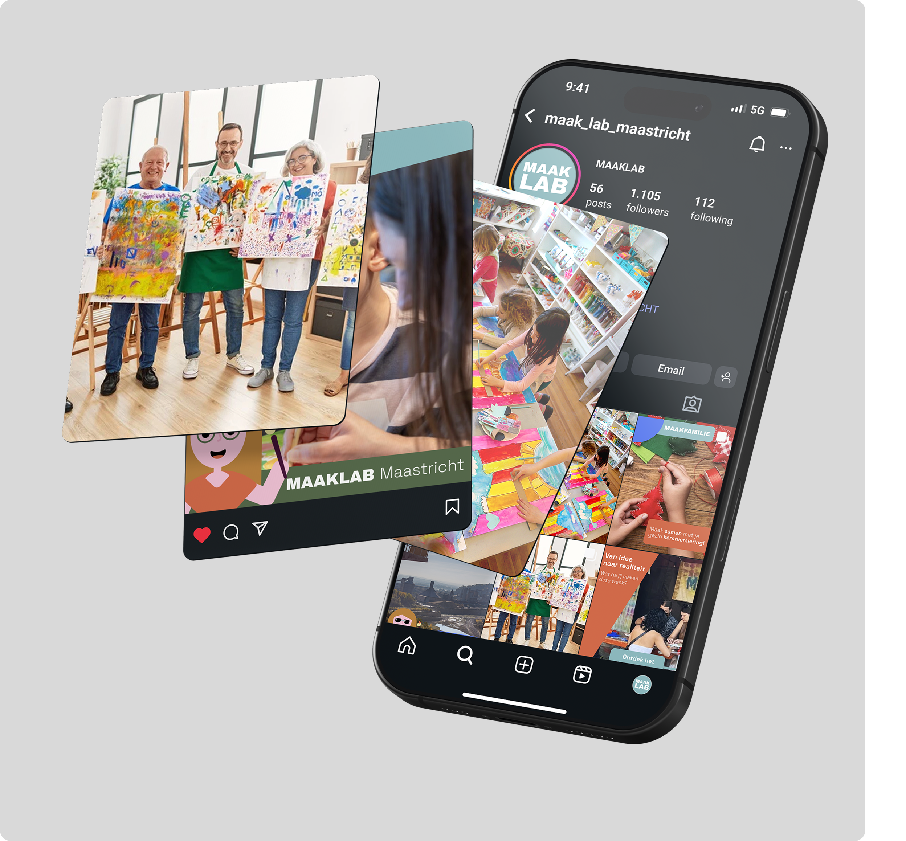
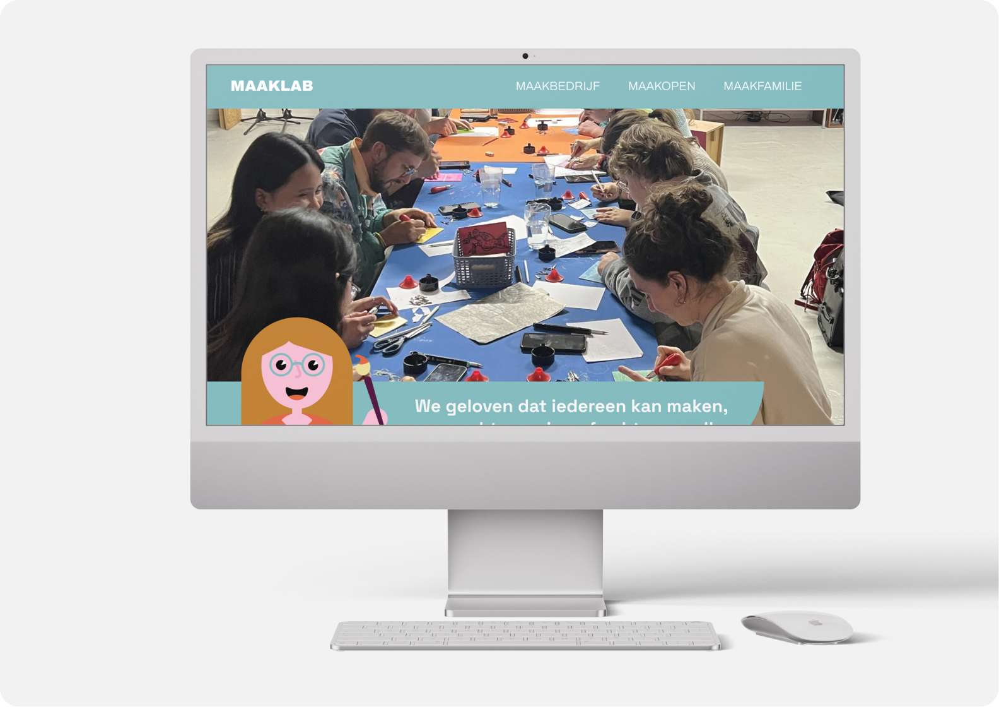
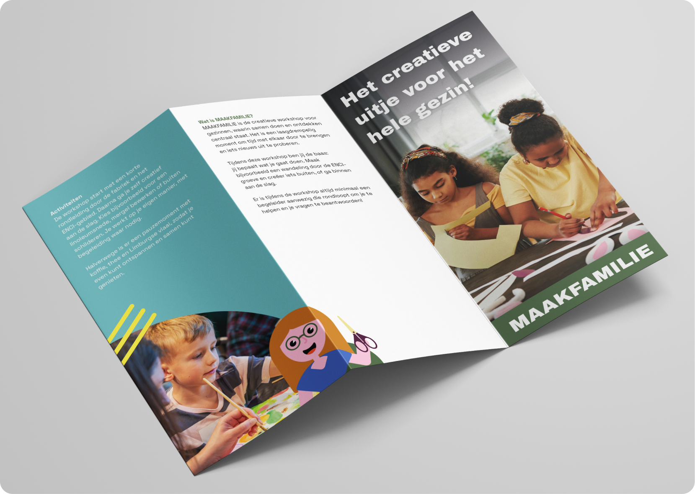

Mediastrategie
In een klein team heb ik gewerkt aan het ontwikkelen van een mediastrategie voor Maaklab Maastricht, waarbij ik de lead nam binnen het project. Ik was verantwoordelijk voor de communicatie binnen het team en met de opdrachtgever, en was actief betrokken bij alle onderdelen van het proces, waaronder onderzoek, conceptontwikkeling, design en het schrijven van het strategisch plan. Op basis van deze input hebben we een strategie uitgewerkt met concrete doelstellingen en acties, die we uiteindelijk hebben gepresenteerd en gepitcht aan de opdrachtgever.



Branding
Daarnaast heb ik, samen met mijn team, een advies opgesteld voor de branding van het Maaklab. Hierbij hebben we gekeken naar positionering, doelgroep en visuele structuur. Dit advies is verder uitgewerkt in een concreet voorstel voor de indeling van het merk in verschillende subtakken en de bijbehorende uitstraling.